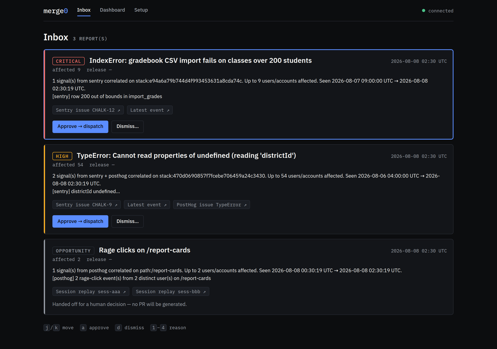
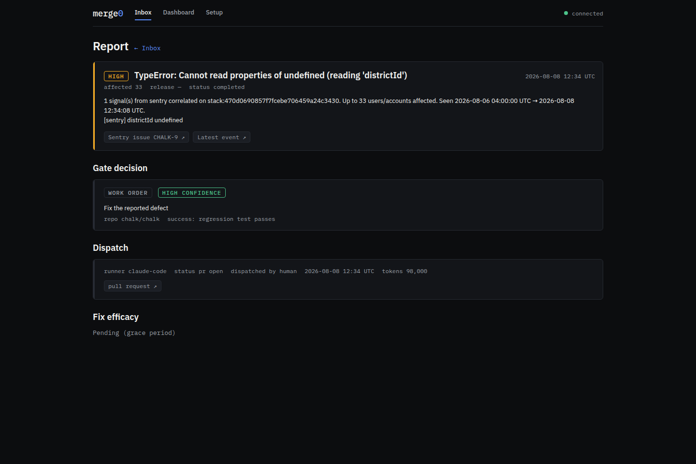
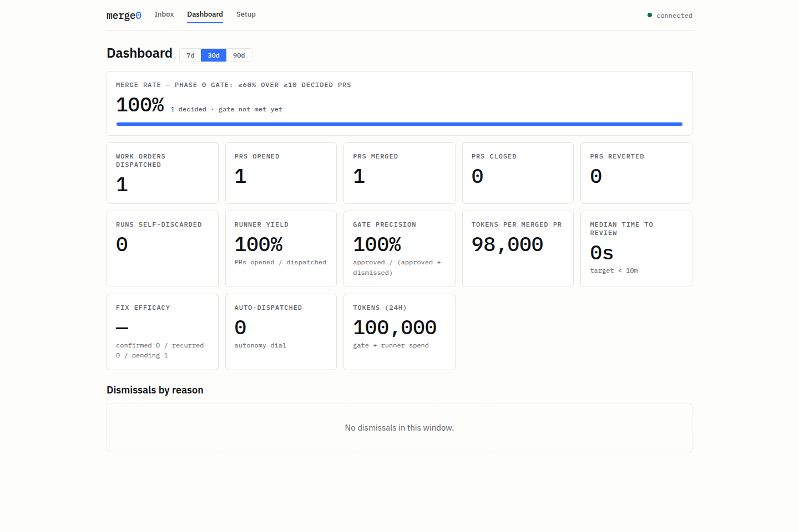
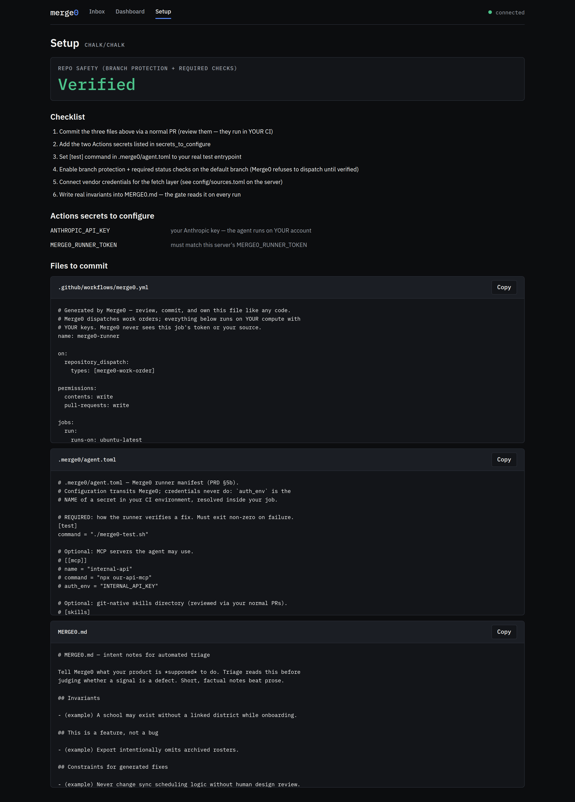

Merge0 ingests the signals your team already collects — crashes, rage clicks, support tickets, funnel drop-offs — triages them into evidence-backed work orders, and turns the approved ones into small, test-passing pull requests. Your coding agent, your compute, your keys.
A human merges every change. No red PRs. No auto-merge. Ever.
Watch a defect travel: from the tools that noticed it to a merged fix that remembers whether it worked.
18 sources normalize into one Signal schema, deep links intact.
Scouts select, clustering joins across sources, a gated model decides.
Approve or dismiss in a keyboard-first inbox, or from Slack.
Your agent fixes it in your CI. Tests green or it never reaches you.
Merges, closes, reverts — every outcome feeds the next decision.
└──── outcome memory ◄────┘
A Sentry crash, a PostHog rage-click on the same page, and a support ticket about it arrive as three signals — normalized, fingerprinted, and joined by release, stack, and URL. No vendor lock-in: Merge0 consumes the tools you already run.
Real screenshots from the shipped inbox and dashboard — not mockups.




The complete single-tenant loop is MIT-licensed and genuinely usable self-hosted. Bring your repo, your observability stack, and an Anthropic key — or no key at all: the gate and the agents both run on a Claude Pro/Max or ChatGPT subscription you already have.
cp .env.example .env, fill in tokens, docker compose up --build —
or skip the server entirely: one-click deploys for
Render,
Railway, and Fly.io are in
docs/one-click-deploy.md.
Open /setup: it serves the runner workflow, the MERGE0.md
intent doc, and the agent manifest — commit them, set two Actions secrets, done.
Flip the tools you use in config/sources.toml — Sentry, PostHog, Datadog,
Mixpanel, Zendesk, Jira, Reddit, X, and ten more. Or push via signature-verified webhooks.
Reports arrive with evidence. Approvals become PRs (or Jira stories, if your team isn't ready for autonomous code yet). You merge. Merge0 remembers.
gate decision accuracy on a 31-scenario corpus of real-world defect shapes
secret, exploit-payload, or reporter-identity leaks into work orders, enforced by eval canaries
seeded-bug fixtures fixed by the agent — and 1/1 policy-violating orders refused
lines per PR by enforced diff budget: small scoped fixes that actually merge
Every number comes from the eval harness in the repo — run it yourself:
evals/BASELINE.md documents the methodology, including what the numbers can't claim yet.
Errors and product signals on one side, everywhere work gets written down on the other. Adapters are small, golden-tested crates — contributions welcome.
And the agent is yours too — the runner speaks every major coding-agent harness in its documented headless mode, on your CI, with your keys:
Agents can review, too: the server speaks
Model Context Protocol at /mcp, so Claude Code or Claude Desktop
can read the queue, pull telemetry, and approve on your say-so — every agent action
audit-tagged separately from human clicks.
The receipts are public: the decision log records why the codebase is shaped this way and which artifact prevents each past bug from returning; the eval baseline records every measured run including the caveats; the security policy and CLA govern what lands in the tree.